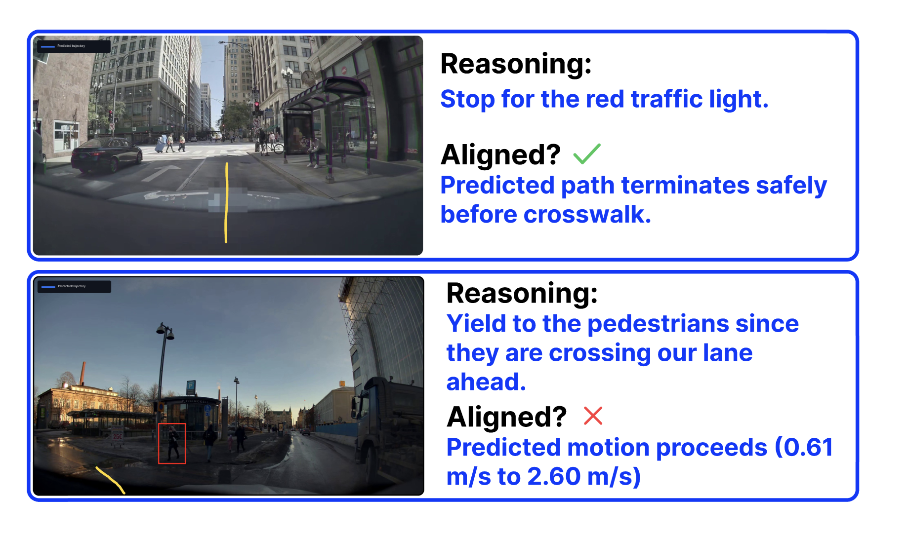

VLAs Don’t Always Do What They Say: Towards Measuring and Improving Alignment in Self-Driving VLAs
Studied whether self-driving models’ reasoning matches and influences their predicted trajectories. Introduced a multi-axis faithfulness benchmark and TRACR, which uses verified, scene-specific code rewards to improve reasoning–action alignment through reinforcement learning while preserving trajectory accuracy.